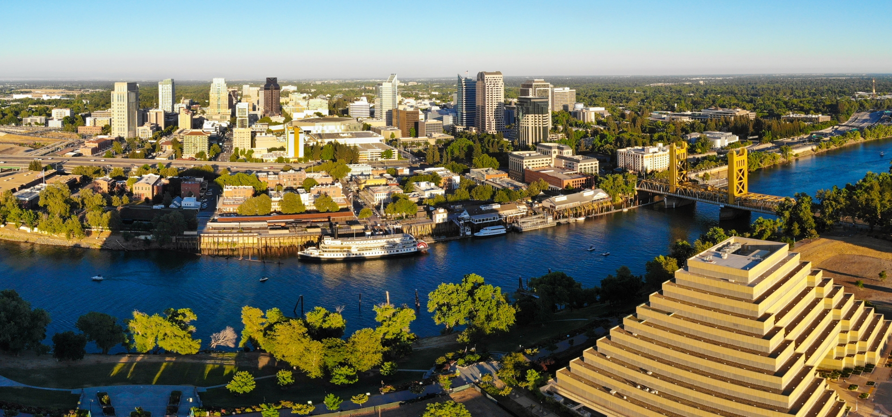

Openings
If you are interested in joining our lab, please take a look at the following opening information.
For prospective Ph.D. students, please apply through the Ph.D. program in the Department of Computer Science and list me as a potential advisor in your application. I will make sure to read your materials if you have listed me. If you would like to reach out to me, please use the email title [PRSP PhD] + your current position and institute/organization, so I can easily pay attention to the message. I will try to read all of the messages, however, I may not be able to reply to all of them. It is usually much easier to start a conversation from a short email with a concrete motivation.
For master students and outstanding undergrads already at UC Davis, if you are interested in participating in our research, you are welcome to contact me and my PhD students. When you do so, please make sure to briefly introduce your background and past experience related to NLP or ML. Note that we rarely host undergraduate students, usually no more than 3 at any time. However, for every undergraduate student who we decide to work with, we expect them to have all the necessary background for leading a research topic like a PhD student. We always target at helping undergraduate students publish nice works as lead authors at top venues in our field, and help them to obtain supports from undergraduate research awards and fellowships. The following are a few of our publications where the lead authors were undergraduate students:
- Victoria Graf, Qin Liu, Muhao Chen. Two Heads are Better than One: Nested PoE for Robust Defense Against Multi-Backdoors. NAACL, 2024.
- Tianyi Yan, Fei Wang, James Y. Huang, Wenxuan Zhou, Fan Yin, Aram Galstyan, Wenpeng Yin, Muhao Chen. Contrastive Instruction Tuning. ACL - Findings, 2024. [pdf]
- Terry Tong, Qin Liu, Jiashu Xu, Muhao Chen. Securing Multi-turn Conversational Language Models from Distributed Backdoor Attacks. EMNLP - Findings, 2024. [pdf]
- Jiashu Xu, Mingyu Derek Ma, Muhao Chen. Can NLI Provide Proper Indirect Supervision for Low-resource Biomedical Relation Extraction? ACL, 2023. [pdf]
- Tanay Dixit, Fei Wang, Muhao Chen. Improving Factuality of Abstractive Summarization without Sacrificing Summary Quality. ACL, 2023. [pdf]
- Shudi Hou, Yu Xia, Muhao Chen, Sujian Li. Contrastive Bootstrapping for Label Refinement. ACL, 2023. [pdf]
- Xiaocong Yang, James Y. Huang, Wenxuan Zhou, Muhao Chen. Parameter-Efficient Tuning with Special Token Adaptation. EACL , 2023. [pdf]
- Bangzheng Li, Wenpeng Yin, Muhao Chen. Ultra-fine Entity Typing with Indirect Supervision from Natural Language Inference. Transactions of the Association for Computational Linguistics (TACL), 2022.[pdf][git]

If you are a prospective summer intern, you can apply to one of the summer research programs if applicable: GREAT Summer Research Program, URC, J-1 Exchange Visitor Program. Otherwise, please send me your request using the email title [PRSP Summer Visit] + your most recent position and institute/organization before the end of April.
For Ph.D. and master students who would like me to serve on your dissertation/thesis committees, I am happy to discuss those opportunities if we have common research interests. Please contact me well in advance.
For other types of prospective visiting scholars, please feel free to contact me. Though it is only possible for me to host a visiting scholar if we can find a good match between our group's research topics and yours.
Our lab will be located in the Kemper Hall, 545 Bainer Hall Dr, Davis, CA 95616.
